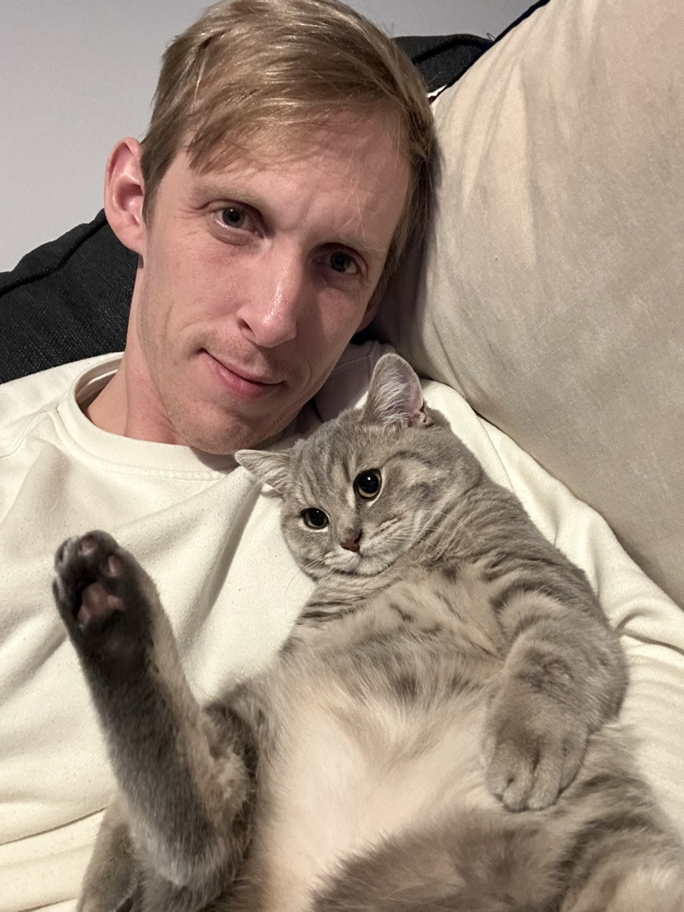

Ashley Buy C.V

About Me
A hard working professional chef, with over 20 years of experience.
Available for hire for all your catering needs.
Experience
Throughout my career I have worked in many kitchens around the world. Including the high end hotel The Inn at Perry Cabin in the Usa, private chef work in Sotogrande Spain for the ex Formula one team boss Eddie Jordan. And also as a Royal Chef to HM Queen Elizabeth II based in the Royal kitchens of Buckingham Palace.
Education
I received an NVQ level 3 in professional cookery at the well respected catering college of Colchester Institute.
Skills
- Team Leader ⭐️⭐️⭐️⭐️⭐️
- Budgeting⭐️⭐️⭐️⭐️
- Customer Service⭐️⭐️⭐️⭐️⭐️
Awards and Certifications
- Level 3 Food Safety
- Level 2 First Aid
- DBS certified
Other